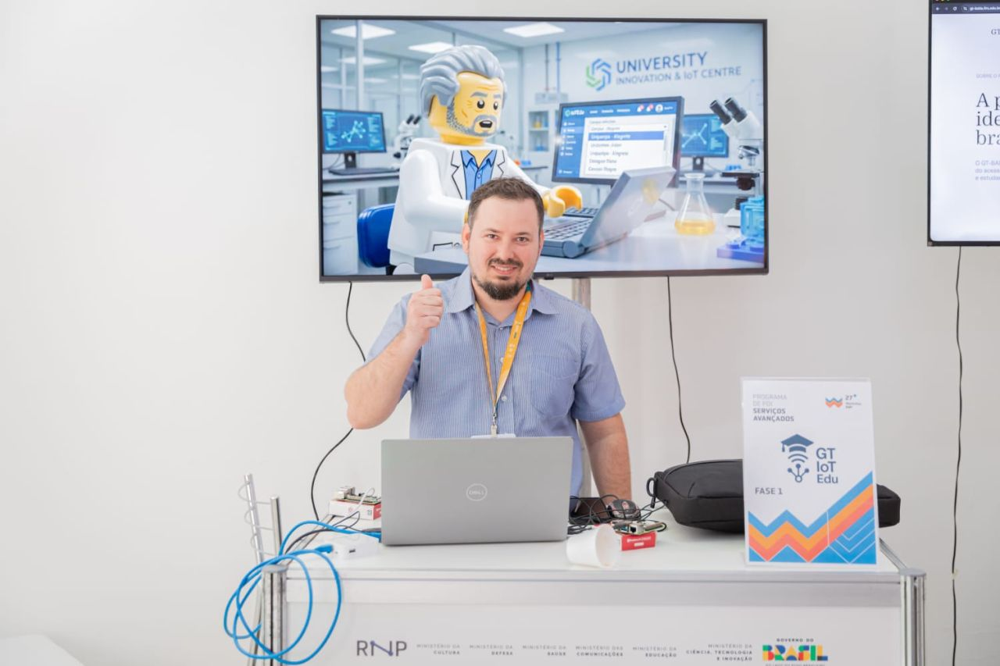
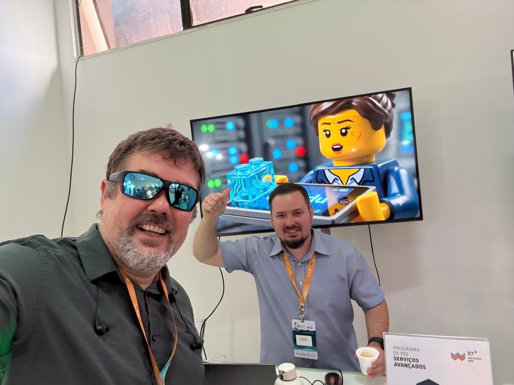
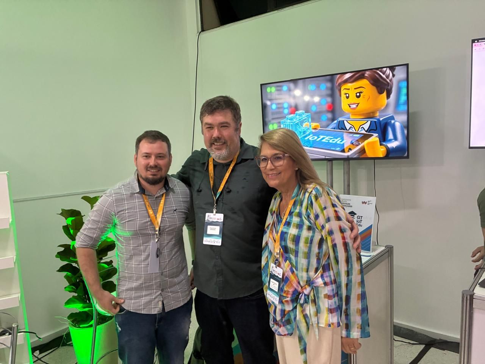
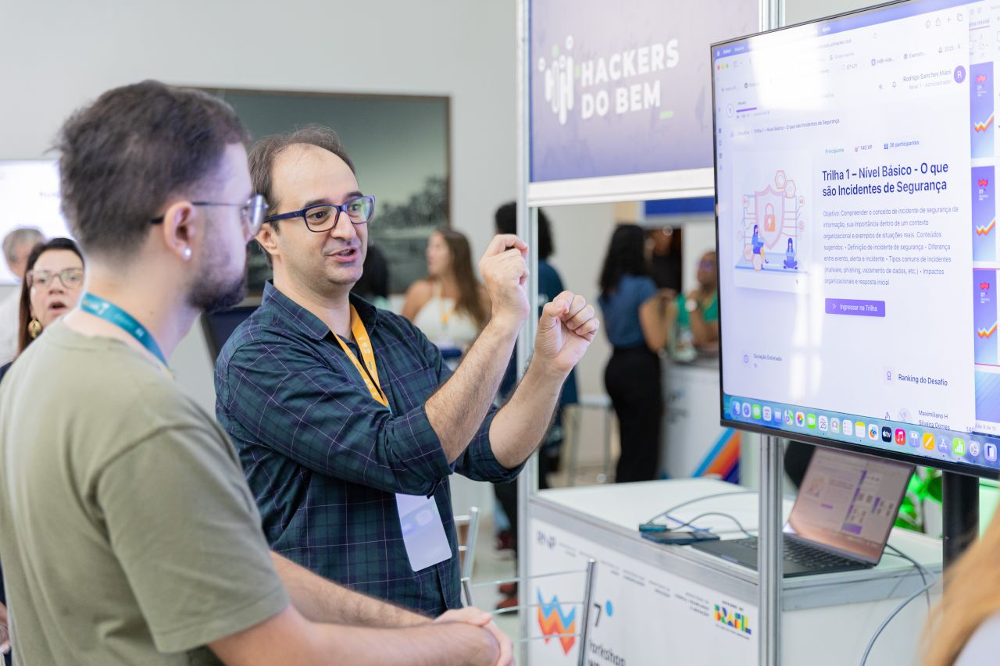
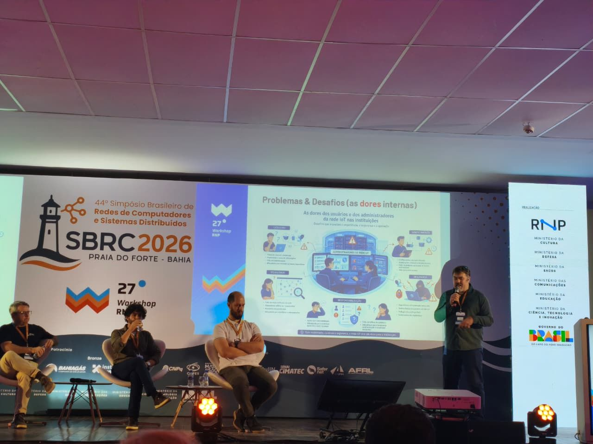
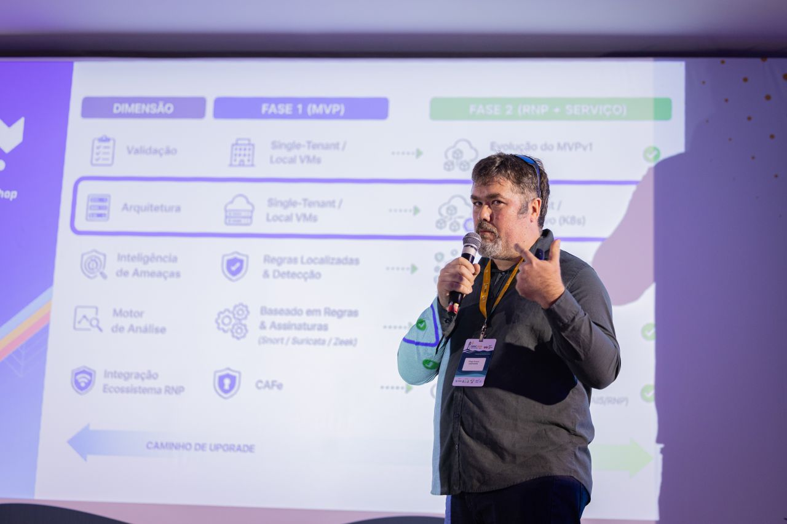

Plataforma innovadora para simplificar y proteger el uso de dispositivos IoT en instituciones, con registro sencillo y seguridad integrada.
El crecimiento exponencial de los dispositivos IoT en las instituciones trajo nuevos desafíos de gestión, seguridad y usabilidad. Nuestra solución busca democratizar el acceso a la tecnología IoT de forma segura y eficiente.
Procesos burocráticos y técnicos que dificultan la adopción de dispositivos IoT
Falta de protocolos estandarizados para dispositivos IoT en las redes institucionales
Los usuarios dependen constantemente del equipo técnico para configuraciones básicas
Una plataforma intuitiva que permite a los usuarios registrar y gestionar sus dispositivos IoT de forma autónoma, con seguridad integrada.
Simplificar y proteger el uso de dispositivos IoT en instituciones.
Los usuarios registran sus dispositivos en segundos, sin necesidad del equipo de TI.
Dispositivos conectados con seguridad y bajo la responsabilidad del usuario.
Las señales priorizadas por severidad pueden activar el bloqueo automático en el firewall, según las políticas de seguridad.
Un pipeline unificado para monitorear, organizar y mitigar.
Consolida señales de diferentes mecanismos de detección para reducir falsos positivos y agilizar la toma de decisiones.
Estandariza y organiza las señales de diferentes mecanismos de detección.
Organiza las señales por contexto y tiempo para reducir el ruido y facilitar el análisis.
Disparadores automatizados de acciones (p. ej., reglas y bloqueos) cuando sea necesario.
Registra evidencias para la mejora continua del pipeline.
Un resumen rápido del GT IoTEdu: el problema, la propuesta y cómo los resultados del proyecto se conectan y culminan en el IoTEdu Core.






Llevamos el proyecto a Praia do Forte (Bahía, Brasil), representado por Joner De Mello Assolin, Diego Kreutz y Rodrigo Miani. Fueron cuatro presentaciones, dos en el WRNP 2026 (stand y escenario principal) y dos en la Sesión de Herramientas (Salão de Ferramentas) del SBRC 2026. Los aspectos más destacados fueron el IoT-ID (fingerprinting determinístico de dispositivos) y el IoT-Zoo (testbed con más de 40 dispositivos para experimentos reproducibles a gran escala). Volvimos con valiosos comentarios y nuevas colaboraciones. ¡Algunas más allá de Brasil!
Conoce los productos y herramientas desarrollados a lo largo del Grupo de Trabajo en alianza con la RNP.
Framework basado en contenedores para la simulación de dispositivos IoT heterogéneos. Automatiza el despliegue de escenarios multidominio y la captura de tráfico (PCAP) para apoyar la investigación, la enseñanza y la validación de soluciones.
Entorno reproducible que integra un repositorio en contenedores con ataques mapeados según MITRE ATT&CK. Facilita la generación trazable de datasets de tráfico de red para la investigación, la enseñanza y la extensión en ciberseguridad.
Primera etapa del flujo de registro y validación de dispositivos IoT: identifica el dispositivo, registra metadatos y prepara el camino para el aprovisionamiento de red y la aplicación de controles básicos de seguridad.
Evolución del flujo con seguridad integrada: conecta sondas de seguridad al entorno y permite activar políticas en el firewall a partir de las evidencias recopiladas, manteniendo la gobernanza y la trazabilidad de las acciones.
Herramienta determinística de identificación de dispositivos IoT. Utiliza el análisis de tráfico para producir identidades estables y explicables, sin depender de modelos probabilísticos ni de entrenamiento de IA.
Núcleo que integra el registro con la seguridad institucional. Centraliza la recopilación de señales y alertas provenientes de sondas de seguridad y, a partir de ello, habilita respuestas mediante el firewall.
Datasets de tráfico de red etiquetados y puestos a disposición de forma abierta para la comunidad de investigación en seguridad e IoT.
Dataset de tráfico etiquetado con 42 escenarios de ataque en un entorno controlado, que abarca reconocimiento, explotación de red, ataques web, fuerza bruta, exfiltración, denegación de servicio e IoT. Generado por AttackZoo con mapeo MITRE ATT&CK.
Dataset de tráfico legítimo a nivel de paquete, capturado en el testbed IoT-Zoo con 43 perfiles de dispositivos heterogéneos en los dominios de Observatorio Urbano, Industrial, e-Health y Smart Farming. Resultado de la fusión sincronizada entre Scapy y Tshark.
Proyecto financiado por la RNP y desarrollado con el apoyo de importantes instituciones de educación superior de Brasil.
Rede Nacional de Ensino e Pesquisa
Alianza estratégica con la RNP para el desarrollo y la implementación de la plataforma GT IoTEdu, aprovechando la infraestructura nacional de red de la RNP para conectar dispositivos IoT de forma segura y eficiente en instituciones educativas.
Red de alta velocidad que conecta instituciones
Protocolos de seguridad para el entorno institucional
Soporte especializado para instituciones
Conoce a los investigadores y desarrolladores detrás del proyecto.
Coordinación y liderazgo de innovación del GT.
Apoyo directo a las actividades de innovación del proyecto.
Investigadores responsables de las actividades técnicas del GT.
Estudiantes de maestría y de grado que participan en el proyecto.
Estudiante de maestría - Unipampa
Correo institucional
douglasfideles.aluno@unipampa.edu.br
Estudiante de grado - Unipampa
Correo institucional
emanuelferreira.aluno@unipampa.edu.br
Estudiante de grado - Unipampa
Correo institucional
matheusciocca.aluno@unipampa.edu.br
Estudiante de maestría - Unipampa
Correo institucional
leonardobitzki.aluno@unipampa.edu.br
Estudiante de maestría - Unipampa
Correo institucional
rafaeltorres.aluno@unipampa.edu.br
Buscamos instituciones interesadas en adoptar IoTEdu y seguir de cerca su evolución.
Con la plataforma, los usuarios pueden registrar sus propios dispositivos, mientras el equipo de TI mantiene el inventario, la identificación del responsable, la visibilidad y el monitoreo de seguridad en un único entorno.
Al participar, tu institución también aporta retroalimentación y ayuda a orientar la evolución de la solución hacia necesidades reales.